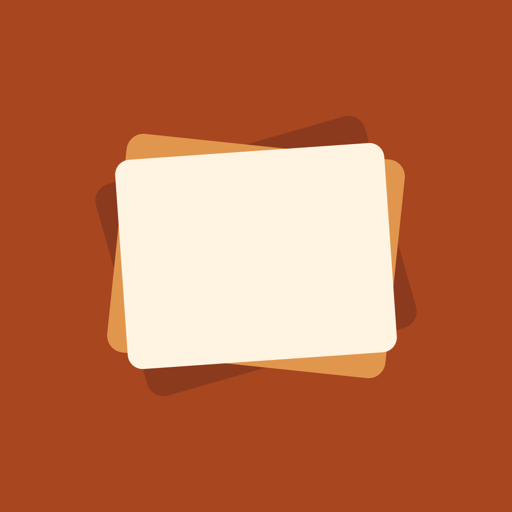

Give your old iPad a second life as a digital picture frame.
Sana runs on your device. The developer has no server, no accounts and no access to your photos. Read the privacy policy.
Sana is in testing and is not on the App Store yet.
Dê ao seu iPad antigo uma segunda vida como porta-retrato digital.
O Sana funciona no seu aparelho. O desenvolvedor não tem servidor, contas nem acesso às suas fotos. Leia a política de privacidade.
O Sana está em fase de testes e ainda não está na App Store.